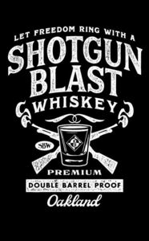

Trade Mark Journal No.2025/032 8 August 2025
WO0000001866136 (33)
Office of origin: United States of America

The mark consists of the wording LET FREEDOM RING WITH A SHOTGUN BLAST WHISKEY SBW MH PREMIUM DOUBLE BARREL PROOF OAKLAND and the stylized design of a shot glass and two shotguns. The words "LET FREEDOM RING WITH A" appear in stylized capital letters curving upwards toward the middle and are positioned over the word "SHOTGUN". The words "SHOTGUN BLAST" appear in larger stylized capital letters on two lines with each word curving upwards toward the center of each word. The word "WHISKEY" appears in smaller stylized capital letters centered under the word "BLAST" and curves upward toward the letter "S" in the center of the word. The stylized design of a shot glass is positioned under the word "WHISKEY'. A diamond shaped design element with thin outer borders of alternating shapes is positioned in the shot glass. The diamond shaped design element is divided into four triangles of alternating shading and within each of the diamond shapes are circles, which are divided into four segments of alternating shading. Within those circles, the letter "M" is positioned directly above the letter "H", also with alternating shading. Two stylized shotguns with the barrels at the top and butts at the bottom are crossed in the shape of an "X" and positioned behind the shot glass with smoke emerging in a series of upward curves from the tip of each barrel. Two overlapping scroll designs are positioned above the shot glass. The letters "SBW" appear in capitalized block letters in an oval on the left side of the shot glass between the butt of one shotgun and the barrel of the other shotgun. The word "PREMIUM" appears in stylized capital letters under the shot glass. The words "DOUBLE BARREL PROOF" appear in capitalized block letters in a rectangle underneath the word "PREMIUM". The word "Oakland" appears in a stylized cursive font under the rectangle and words "DOUBLE BARREL PROOF". The shading, stippling, and hatching used in the mark are features of the mark.
- Class 33
- Whiskey.
Ten Ton Trading Co.
Representative: Peter Nussbaum Chiesa Shahinian & Giantomasi PC, 105 Eisenhower Parkway, Roseland NJ 07068, UNITED STATES OF AMERICA